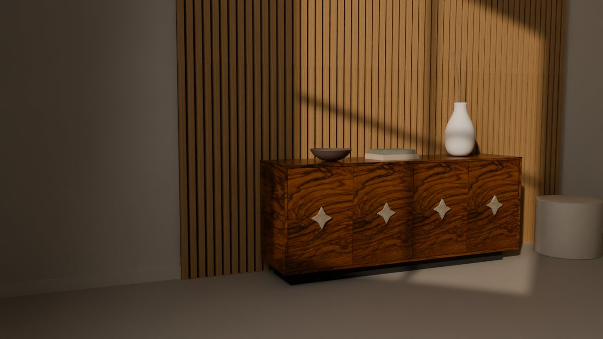
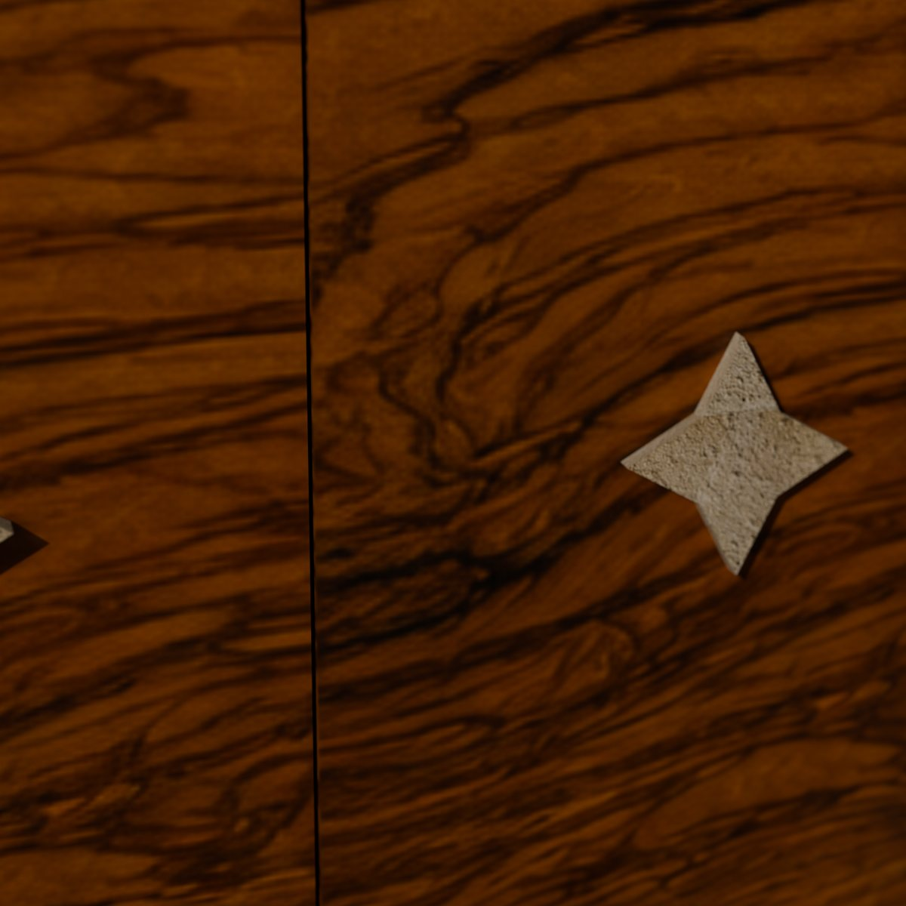
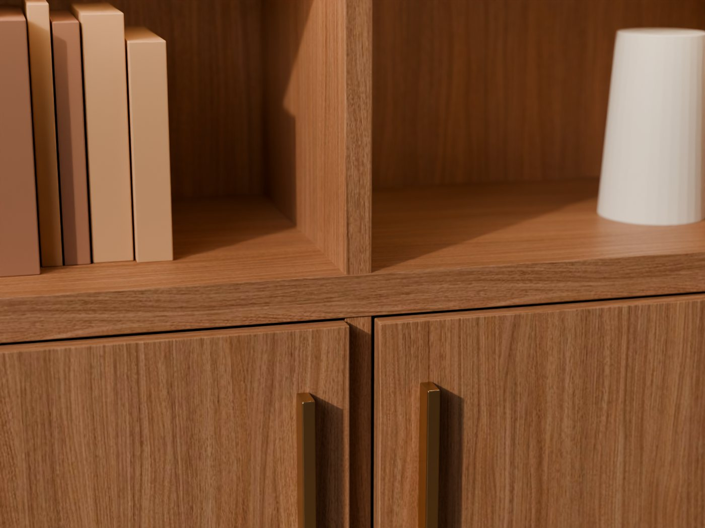
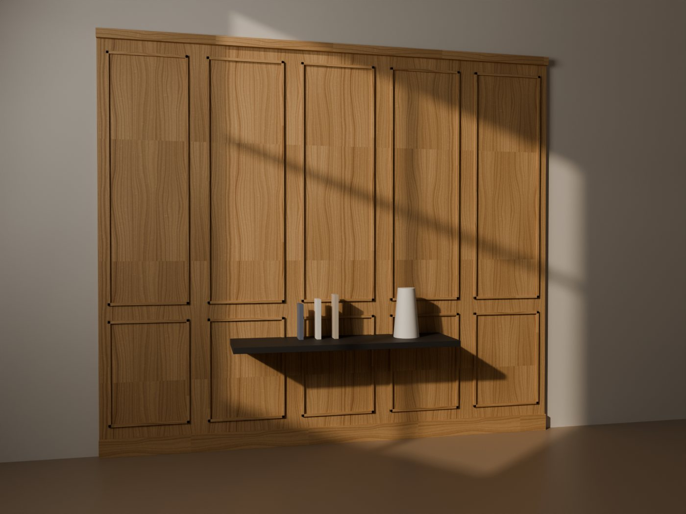
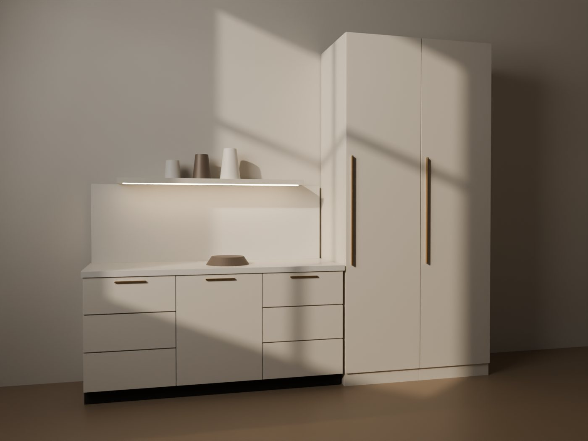

Ramirez Atelier · Fase B · Progetto visivo
Lusso discreto, precisione sartoriale, materiali autentici. Una direzione da rivista d’architettura: molto spazio, una sola voce tipografica forte, colori presi dai materiali dell’atelier. Questo sistema vale solo per il sito pubblico: l’area riservata resta con i suoi componenti attuali.





Avorio #F6F1E9
sfondo principale
Pietra #EDE5D8
superfici alternate
Antracite #1E1B18
testi, sezioni scure
Noce #5B3F2C
fasce di invito
Rovere #B48A5A
numeri, filetti (2,8:1, mai testo)
Bronzo #7A5A32
sovratitoli su chiaro
Bronzo chiaro #C9A46A
accenti su scuro
Grigio caldo #5E564C
testi secondari
Display 84 · Fraunces 300
Titolo sezione 56
Titolo scheda 32
Testo introduttivo 18 · Inter 400 · interlinea 1,6
Testo corrente 16 (mai sotto 16 nei paragrafi, 12 minimo per etichette)
Sovratitolo 12 · spaziatura .24em
Fraunces e Inter sono già caricati dal sito con next/font: nessun font nuovo,
nessuna chiamata esterna in più.
| Elemento | Valore |
|---|---|
| Scala spaziature | 4 · 8 · 12 · 16 · 24 · 32 · 48 · 64 · 96 · 128 px |
| Sezioni | 88–140 px verticali (fluido) |
| Contenitore | max 1320 px, margini 20–40 px |
| Griglia | 12 colonne desktop, 6 tablet, 2 mobile per gallerie |
| Breakpoint | 640 · 768 · 1024 · 1280 (quelli di Tailwind già in uso) |
| Raggi | pulsanti 999 px · card 20 px · media 24 px |
| Uso | Curva | Durata |
|---|---|---|
| Pressione pulsanti | ease-out cubic-bezier(.23,1,.32,1), scale .97 |
160 ms |
| Hover colore | ease-out | 160–200 ms |
| Comparsa menu, pannelli | ease-out, da −6 px + opacità | 200 ms |
| Rivelazione immagini allo scorrimento | ease-in-out cubic-bezier(.77,0,.175,1), clip-path |
600 ms, una volta |
| Camera del video di apertura | ease-in-out (stessa curva) | 8 s, una riproduzione |
| Movimento ridotto | niente scala, niente rivelazioni, video sostituito dal fotogramma fisso; restano solo dissolvenze brevi | |
| Risorsa | Limite | Stato attuale |
|---|---|---|
| Video di apertura | ≤ 2,5 MB (WebM + MP4), 1280×720, senza audio | in render |
| Fotogramma statico (poster/fallback) | ≤ 200 KB | ~150 KB |
| Modelli 3D | ≤ 500 KB ciascuno, caricati solo in vista | madia 1,7 MB → ~480 KB (interno nascosto rimosso, texture 896 px) · libreria 260–350 KB |
| JavaScript della home | ≤ +30 KB rispetto a oggi (113 KB) | model-viewer escluso: caricato solo quando serve |
| Immagini | AVIF/WebP via next/image, sizes corretti |
— |